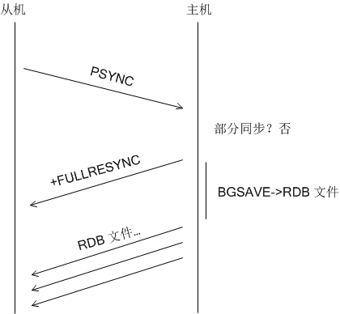

全同步
无论如何，redis 首先会尝试部分同步，如果失败才尝试全同步。而刚刚建立连接的 master-slave 需要全同步。
从机连接主机后，会主动发起 PSYNC 命令，从机会提供 master_runid 和 offset，主机验证 master_runid 和 offset 是否有效？master_runid 相当于主机身份验证码，用来验证从机上一次连接的主机，offset 是全局积压空间数据的偏移量。
验证未通过则，则进行全同步：主机返回 +FULLRESYNC master_runid offset（从机接收并记录 master_runid 和 offset，并准备接收 RDB 文件）接着启动 BGSAVE 生成 RDB 文件，BGSAVE 结束后，向从机传输，从而完成全同步。
主机和从机之间的交互图如下：

// 连接主机 connectWithMaster() 的时候，会被注册为回调函数
void syncWithMaster(aeEventLoop *el, int fd, void *privdata, int mask) {
char tmpfile[256], *err;
int dfd, maxtries = 5;
int sockerr = 0, psync_result;
socklen_t errlen = sizeof(sockerr);
......
// 这里尝试向主机请求部分同步，主机会回复以拒绝或接受请求。如果拒绝部分同步，
// 会返回 +FULLRESYNC master_runid offset
// 从机接收后准备进行全同步
psync_result = slaveTryPartialResynchronization(fd);
if (psync_result == PSYNC_CONTINUE) {
redisLog(REDIS_NOTICE, "MASTER <-> SLAVE sync: Master accepted a "
"Partial Resynchronization.");
return;
}
// 执行全同步
/* Fall back to SYNC if needed. Otherwise psync_result == PSYNC_FULLRESYNC
* and the server.repl_master_runid and repl_master_initial_offset are
* already populated. */
// 未知结果，进行出错处理
if (psync_result == PSYNC_NOT_SUPPORTED) {
redisLog(REDIS_NOTICE,"Retrying with SYNC...");
if (syncWrite(fd,"SYNC\r\n",6,server.repl_syncio_timeout*1000) == -1) {
redisLog(REDIS_WARNING,"I/O error writing to MASTER: %s",
strerror(errno));
goto error;
}
}
// 为什么要尝试 5次？？？
/* Prepare a suitable temp file for bulk transfer */
while(maxtries--) {
snprintf(tmpfile,256,
"temp-%d.%ld.rdb",(int)server.unixtime,(long int)getpid());
dfd = open(tmpfile,O_CREAT|O_WRONLY|O_EXCL,0644);
if (dfd != -1) break;
sleep(1);
}
if (dfd == -1) {
redisLog(REDIS_WARNING,"Opening the temp file needed for MASTER <-> "
"SLAVE synchronization: %s",strerror(errno));
goto error;
}
// 注册读事件，回调函数 readSyncBulkPayload()， 准备读 RDB 文件
/* Setup the non blocking download of the bulk file. */
if (aeCreateFileEvent(server.el,fd, AE_READABLE,readSyncBulkPayload,NULL)
== AE_ERR)
{
redisLog(REDIS_WARNING,
"Can't create readable event for SYNC: %s (fd=%d)",
strerror(errno),fd);
goto error;
}
// 设置传输 RDB 文件数据的选项
// 状态
server.repl_state = REDIS_REPL_TRANSFER;
// RDB 文件大小
server.repl_transfer_size = -1;
// 已经传输的大小
server.repl_transfer_read = 0;
// 上一次同步的偏移，为的是定时写入磁盘
server.repl_transfer_last_fsync_off = 0;
// 本地 RDB 文件套接字
server.repl_transfer_fd = dfd;
// 上一次同步 IO 时间
server.repl_transfer_lastio = server.unixtime;
// 临时文件名
server.repl_transfer_tmpfile = zstrdup(tmpfile);
return;
error:
close(fd);
server.repl_transfer_s = -1;
server.repl_state = REDIS_REPL_CONNECT;
return;
}
全同步请求的数据是 RDB 数据文件和积压空间中的数据。关于 RDB 数据文件，请参见《RDB 持久化策略》。如果没有后台持久化 BGSAVE 进程，那么 BGSVAE 会被触发，否则所有请求全同步的 slave 都会被标记为等待 BGSAVE 结束。BGSAVE 结束后，master 会马上向所有的从机发送 RDB 文件。
下面 syncCommand() 摘取全同步的部分：
// 主机 SYNC 和 PSYNC 命令处理函数，会尝试进行部分同步和全同步
/* SYNC ad PSYNC command implemenation. */
void syncCommand(redisClient *c) {
......
// 主机尝试部分同步，失败的话向从机发送 +FULLRESYNC master_runid offset，
// 接着启动 BGSAVE
// 执行全同步：
/* Full resynchronization. */
server.stat_sync_full++;
/* Here we need to check if there is a background saving operation
* in progress, or if it is required to start one */
if (server.rdb_child_pid != -1) {
/* 存在 BGSAVE 后台进程。
1.如果 master 现有所连接的所有从机 slaves 当中有存在
REDIS_REPL_WAIT_BGSAVE_END 的从机，那么将从机 c 设置为
REDIS_REPL_WAIT_BGSAVE_END；
2.否则，设置为 REDIS_REPL_WAIT_BGSAVE_START*/
/* Ok a background save is in progress. Let's check if it is a good
* one for replication, i.e. if there is another slave that is
* registering differences since the server forked to save */
redisClient *slave;
listNode *ln;
listIter li;
// 检测是否已经有从机申请全同步
listRewind(server.slaves,&li);
while((ln = listNext(&li))) {
slave = ln->value;
if (slave->replstate == REDIS_REPL_WAIT_BGSAVE_END) break;
}
if (ln) {
// 存在状态为 REDIS_REPL_WAIT_BGSAVE_END 的从机 slave，
// 就将此从机 c 状态设置为 REDIS_REPL_WAIT_BGSAVE_END，
// 从而在 BGSAVE 进程结束后，可以发送 RDB 文件，
// 同时将从机 slave 中的更新复制到此从机 c。
/* Perfect, the server is already registering differences for
* another slave. Set the right state, and copy the buffer. */
// 将其他从机上的待回复的缓存复制到从机 c
copyClientOutputBuffer(c,slave);
// 修改从机 c 状态为「等待 BGSAVE 进程结束」
c->replstate = REDIS_REPL_WAIT_BGSAVE_END;
redisLog(REDIS_NOTICE,"Waiting for end of BGSAVE for SYNC");
} else {
// 不存在状态为 REDIS_REPL_WAIT_BGSAVE_END 的从机，就将此从机 c 状态设置为
// REDIS_REPL_WAIT_BGSAVE_START，即等待新的 BGSAVE 进程的开启。
// 修改状态为「等待 BGSAVE 进程开始」
/* No way, we need to wait for the next BGSAVE in order to
* register differences */
c->replstate = REDIS_REPL_WAIT_BGSAVE_START;
redisLog(REDIS_NOTICE,"Waiting for next BGSAVE for SYNC");
}
} else {
// 不存在 BGSAVE 后台进程，启动一个新的 BGSAVE 进程
/* Ok we don't have a BGSAVE in progress, let's start one */
redisLog(REDIS_NOTICE,"Starting BGSAVE for SYNC");
if (rdbSaveBackground(server.rdb_filename) != REDIS_OK) {
redisLog(REDIS_NOTICE,"Replication failed, can't BGSAVE");
addReplyError(c,"Unable to perform background save");
return;
}
// 将此从机 c 状态设置为 REDIS_REPL_WAIT_BGSAVE_END，从而在 BGSAVE
// 进程结束后，可以发送 RDB 文件，同时将从机 slave 中的更新复制到此从机 c。
c->replstate = REDIS_REPL_WAIT_BGSAVE_END;
// 清理脚本缓存？？？
/* Flush the script cache for the new slave. */
replicationScriptCacheFlush();
}
if (server.repl_disable_tcp_nodelay)
anetDisableTcpNoDelay(NULL, c->fd); /* Non critical if it fails. */
c->repldbfd = -1;
c->flags |= REDIS_SLAVE;
server.slaveseldb = -1; /* Force to re-emit the SELECT command. */
listAddNodeTail(server.slaves,c);
if (listLength(server.slaves) == 1 && server.repl_backlog == NULL)
createReplicationBacklog();
return;
}
主机执行完 BGSAVE 后，会将 RDB 文件发送给从机。
// BGSAVE 结束后，会调用
/* A background saving child (BGSAVE) terminated its work. Handle this. */
void backgroundSaveDoneHandler(int exitcode, int bysignal) {
// 其他操作
......
// 可能从机正在等待 BGSAVE 进程的终止
/* Possibly there are slaves waiting for a BGSAVE in order to be served
* (the first stage of SYNC is a bulk transfer of dump.rdb) */
updateSlavesWaitingBgsave(exitcode == 0 ? REDIS_OK : REDIS_ERR);
}
// 当 RDB 持久化(backgroundSaveDoneHandler())结束后，会调用此函数
// RDB 文件就绪，给所有的从机发送 RDB 文件
/* This function is called at the end of every background saving.
* The argument bgsaveerr is REDIS_OK if the background saving succeeded
* otherwise REDIS_ERR is passed to the function.
*
* The goal of this function is to handle slaves waiting for a successful
* background saving in order to perform non-blocking synchronization. */
void updateSlavesWaitingBgsave(int bgsaveerr) {
listNode *ln;
int startbgsave = 0;
listIter li;
listRewind(server.slaves,&li);
while((ln = listNext(&li))) {
redisClient *slave = ln->value;
// 等待 BGSAVE 开始。调整状态为等待下一次 BGSAVE 进程的结束
if (slave->replstate == REDIS_REPL_WAIT_BGSAVE_START) {
startbgsave = 1;
slave->replstate = REDIS_REPL_WAIT_BGSAVE_END;
// 等待 BGSAVE 结束。准备向 slave 发送 RDB 文件
} else if (slave->replstate == REDIS_REPL_WAIT_BGSAVE_END) {
struct redis_stat buf;
// 如果 RDB 持久化失败， bgsaveerr 会被设置为 REDIS_ERR
if (bgsaveerr != REDIS_OK) {
freeClient(slave);
redisLog(REDIS_WARNING,"SYNC failed. BGSAVE child returned "
"an error");
continue;
}
// 打开 RDB 文件
if ((slave->repldbfd = open(server.rdb_filename,O_RDONLY)) == -1 ||
redis_fstat(slave->repldbfd,&buf) == -1) {
freeClient(slave);
redisLog(REDIS_WARNING,"SYNC failed. Can't open/stat DB after"
" BGSAVE: %s", strerror(errno));
continue;
}
slave->repldboff = 0;
slave->repldbsize = buf.st_size;
slave->replstate = REDIS_REPL_SEND_BULK;
// 如果之前有注册写事件，取消
aeDeleteFileEvent(server.el,slave->fd,AE_WRITABLE);
// 注册新的写事件,sendBulkToSlave() 传输 RDB 文件
if (aeCreateFileEvent(server.el, slave->fd, AE_WRITABLE,
sendBulkToSlave, slave) == AE_ERR) {
freeClient(slave);
continue;
}
}
}
// startbgsave == REDIS_ERR 表示 BGSAVE 失败，再一次进行 BGSAVE 尝试
if (startbgsave) {
/* Since we are starting a new background save for one or more slaves,
* we flush the Replication Script Cache to use EVAL to propagate every
* new EVALSHA for the first time, since all the new slaves don't know
* about previous scripts. */
replicationScriptCacheFlush();
if (rdbSaveBackground(server.rdb_filename) != REDIS_OK) {
/*BGSAVE 可能 fork 失败，所有等待 BGSAVE 的从机都将结束连接。这是
redis 自我保护的措施，fork 失败很可能是内存紧张*/
listIter li;
listRewind(server.slaves,&li);
redisLog(REDIS_WARNING,"SYNC failed. BGSAVE failed");
while((ln = listNext(&li))) {
redisClient *slave = ln->value;
if (slave->replstate == REDIS_REPL_WAIT_BGSAVE_START)
freeClient(slave);
}
}
}
}